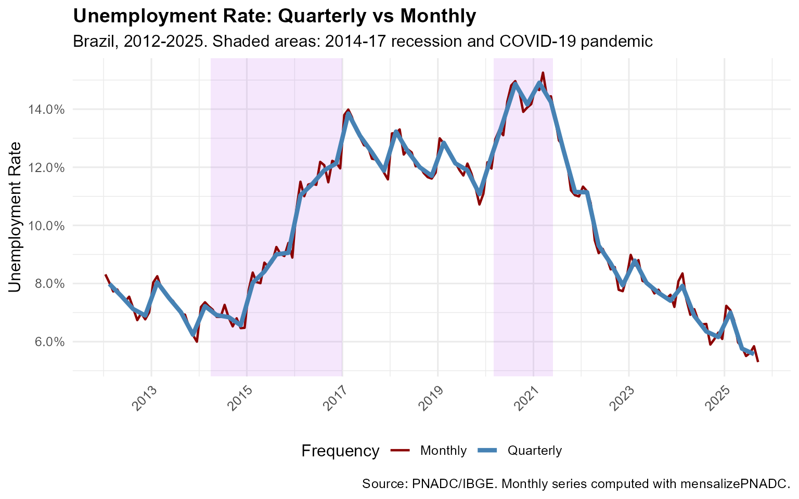
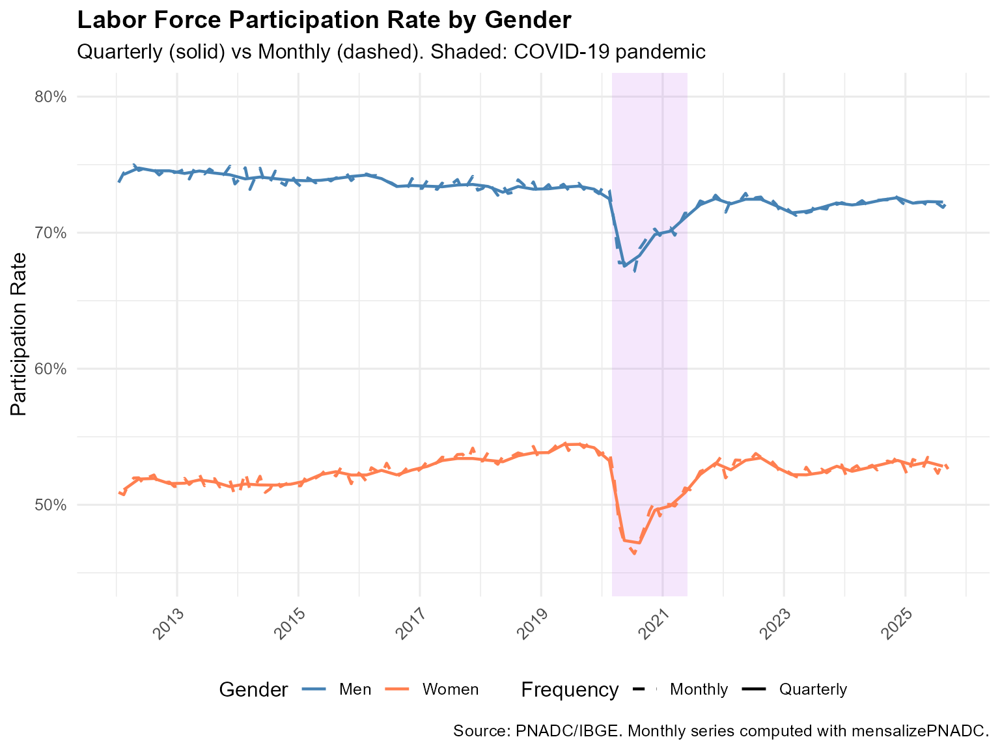
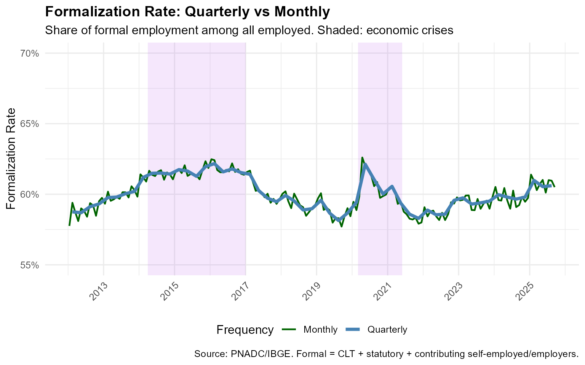
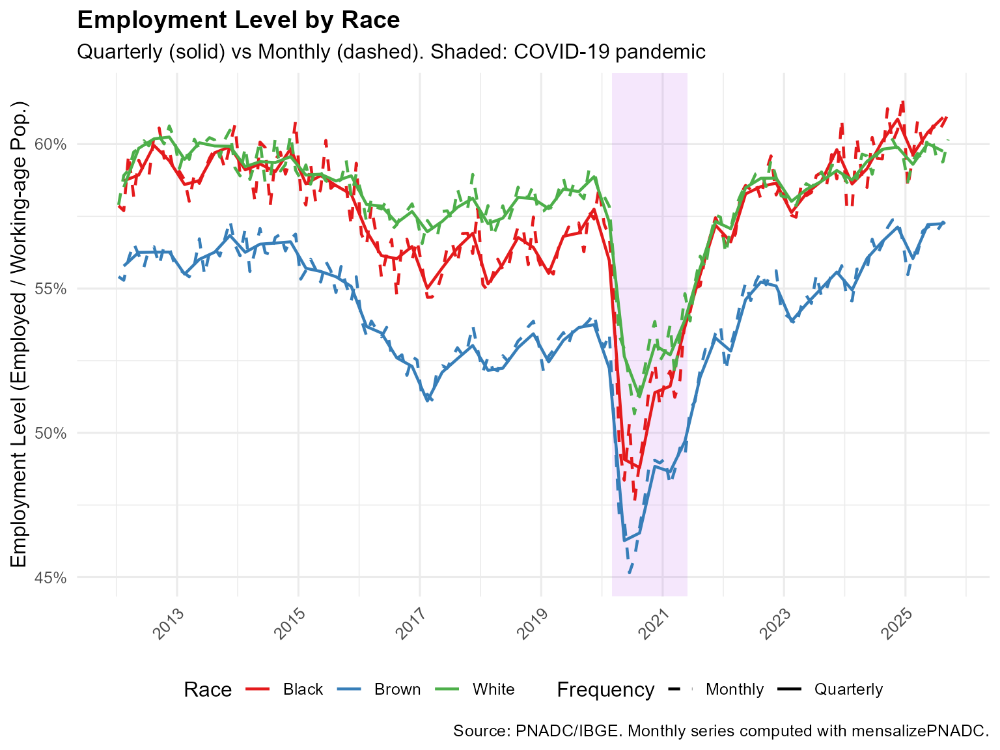

Applied Examples: Quarterly vs Monthly Labor Market Series
Source:vignettes/applied-examples.Rmd
applied-examples.RmdIntroduction
This vignette demonstrates the value of converting quarterly PNADC
data into monthly time series using mensalizePNADC. We
compare four key labor market indicators at both frequencies to show how
monthly data reveals dynamics that quarterly aggregates obscure.
Why monthly data matters:
- Turning points in economic cycles become visible earlier
- Seasonal patterns within quarters can be identified
- Short-term shocks (like COVID-19) show their true timing and magnitude
- Policy evaluation benefits from more precise timing
We analyze four indicators:
- Unemployment rate - National total
- Labor force participation - By gender
- Formalization rate - National total
- Employment level - By race
Load Pre-computed Series
The series shown here were computed from 28.4 million PNADC observations covering 2012-Q1 to 2025-Q3. The mensalization achieved a 95.4% determination rate, meaning that 95.4% of observations could be assigned to specific months.
library(data.table)
library(ggplot2)
library(scales)
# Load pre-computed series (included with package)
data_file <- system.file("extdata", "vignette_series.rds", package = "mensalizePNADC")
if (file.exists(data_file) && nchar(data_file) > 0) {
vignette_data <- readRDS(data_file)
# Extract series
quarterly_total <- vignette_data$quarterly_total
quarterly_gender <- vignette_data$quarterly_gender
quarterly_race <- vignette_data$quarterly_race
monthly_total <- vignette_data$monthly_total
monthly_gender <- vignette_data$monthly_gender
monthly_race <- vignette_data$monthly_race
cat("Data loaded successfully!\n")
cat("Period:", vignette_data$period_start, "to", vignette_data$period_end, "\n")
cat("Observations:", format(vignette_data$n_observations, big.mark = ","), "\n")
cat("Determination rate:", sprintf("%.1f%%", vignette_data$determination_rate * 100), "\n")
} else {
stop("Pre-computed data not found. Please run generate_vignette_data.R first.")
}
#> Data loaded successfully!
#> Period: 2012-Q1 to 2025-Q3
#> Observations: 22,850,046
#> Determination rate: 95.4%Comparison 1: Unemployment Rate (National)
The unemployment rate is the most watched labor market indicator. Monthly data reveals the precise timing of turning points that quarterly data obscures.
# Combine quarterly and monthly data
unemployment_combined <- rbind(
quarterly_total[, .(period, unemployment_rate, frequency)],
monthly_total[, .(period, unemployment_rate, frequency)]
)
# Define crisis periods for shading
crisis_periods <- data.frame(
start = as.Date(c("2014-04-01", "2020-03-01")),
end = as.Date(c("2017-01-01", "2021-06-01")),
label = c("2014-17 Recession", "COVID-19")
)
# Plot
ggplot(unemployment_combined, aes(x = period, y = unemployment_rate,
color = frequency, linewidth = frequency)) +
# Crisis shading
geom_rect(data = crisis_periods,
aes(xmin = start, xmax = end, ymin = -Inf, ymax = Inf),
inherit.aes = FALSE, fill = "purple", alpha = 0.1) +
geom_line() +
scale_y_continuous(labels = percent_format(accuracy = 0.1),
breaks = seq(0, 0.16, 0.02)) +
scale_x_date(date_breaks = "2 years", date_labels = "%Y") +
scale_color_manual(values = c("Quarterly" = "steelblue", "Monthly" = "darkred")) +
scale_linewidth_manual(values = c("Quarterly" = 1.5, "Monthly" = 0.8)) +
labs(
title = "Unemployment Rate: Quarterly vs Monthly",
subtitle = "Brazil, 2012-2025. Shaded areas: 2014-17 recession and COVID-19 pandemic",
x = NULL, y = "Unemployment Rate",
color = "Frequency", linewidth = "Frequency",
caption = "Source: PNADC/IBGE. Monthly series computed with mensalizePNADC."
) +
theme_minimal(base_size = 12) +
theme(
legend.position = "bottom",
plot.title = element_text(face = "bold"),
axis.text.x = element_text(angle = 45, hjust = 1)
)
Key insights from monthly data:
- The unemployment peak during COVID-19 (March-April 2020) is precisely dated
- Seasonal patterns within quarters become visible (year-end hiring, etc.)
- The 2014-17 recession shows gradual buildup visible month-by-month
- Recovery trajectories show month-by-month progress rather than quarterly jumps
Comparison 2: Labor Force Participation by Gender
Labor force participation shows strong gender differences. Monthly data reveals how economic shocks affected men and women differently in terms of timing and magnitude.
# Combine data
participation_gender <- rbind(
quarterly_gender[, .(period, sexo, participation_rate, frequency)],
monthly_gender[, .(period, sexo, participation_rate, frequency)]
)
ggplot(participation_gender, aes(x = period, y = participation_rate,
color = sexo, linetype = frequency)) +
# COVID shading
geom_rect(data = data.frame(
start = as.Date("2020-03-01"),
end = as.Date("2021-06-01")
), aes(xmin = start, xmax = end, ymin = -Inf, ymax = Inf),
inherit.aes = FALSE, fill = "purple", alpha = 0.1) +
geom_line(linewidth = 0.8) +
scale_y_continuous(labels = percent_format(accuracy = 1),
limits = c(0.45, 0.80)) +
scale_x_date(date_breaks = "2 years", date_labels = "%Y") +
scale_color_manual(values = c("Men" = "steelblue", "Women" = "coral")) +
scale_linetype_manual(values = c("Quarterly" = "solid", "Monthly" = "dashed")) +
labs(
title = "Labor Force Participation Rate by Gender",
subtitle = "Quarterly (solid) vs Monthly (dashed). Shaded: COVID-19 pandemic",
x = NULL, y = "Participation Rate",
color = "Gender", linetype = "Frequency",
caption = "Source: PNADC/IBGE. Monthly series computed with mensalizePNADC."
) +
theme_minimal(base_size = 12) +
theme(
legend.position = "bottom",
plot.title = element_text(face = "bold"),
axis.text.x = element_text(angle = 45, hjust = 1)
)
Key insights:
- Women’s participation dropped more sharply during COVID-19 (childcare burden)
- Monthly data shows the exact timing of the collapse and recovery
- The gender gap widened during the pandemic before narrowing again
- Seasonal patterns differ by gender (e.g., school calendar effects)
Comparison 3: Formalization Rate (National)
The formalization rate measures the share of formal employment (CLT contracts, statutory employees, or self-employed/employers contributing to social security). This indicator is crucial for understanding labor market quality.
# Combine data
formalization_combined <- rbind(
quarterly_total[, .(period, formalization_rate, frequency)],
monthly_total[, .(period, formalization_rate, frequency)]
)
ggplot(formalization_combined, aes(x = period, y = formalization_rate,
color = frequency, linewidth = frequency)) +
# Crisis shading
geom_rect(data = crisis_periods,
aes(xmin = start, xmax = end, ymin = -Inf, ymax = Inf),
inherit.aes = FALSE, fill = "purple", alpha = 0.1) +
geom_line() +
scale_y_continuous(labels = percent_format(accuracy = 1),
limits = c(0.55, 0.70)) +
scale_x_date(date_breaks = "2 years", date_labels = "%Y") +
scale_color_manual(values = c("Quarterly" = "steelblue", "Monthly" = "darkgreen")) +
scale_linewidth_manual(values = c("Quarterly" = 1.5, "Monthly" = 0.8)) +
labs(
title = "Formalization Rate: Quarterly vs Monthly",
subtitle = "Share of formal employment among all employed. Shaded: economic crises",
x = NULL, y = "Formalization Rate",
color = "Frequency", linewidth = "Frequency",
caption = "Source: PNADC/IBGE. Formal = CLT + statutory + contributing self-employed/employers."
) +
theme_minimal(base_size = 12) +
theme(
legend.position = "bottom",
plot.title = element_text(face = "bold"),
axis.text.x = element_text(angle = 45, hjust = 1)
)
Key insights:
- Formalization declined during both crises (2014-17 and COVID-19)
- Monthly data reveals seasonal patterns (e.g., year-end temporary formal contracts)
- The 2017 labor reform effects can be tracked month-by-month
- Recovery patterns differ between crises
Comparison 4: Employment Level by Race
Employment levels by race reveal structural inequalities in the Brazilian labor market and how different groups were affected by economic shocks.
# Combine data
employment_race <- rbind(
quarterly_race[, .(period, raca, employment_level, frequency)],
monthly_race[, .(period, raca, employment_level, frequency)]
)
ggplot(employment_race, aes(x = period, y = employment_level,
color = raca, linetype = frequency)) +
# COVID shading
geom_rect(data = data.frame(
start = as.Date("2020-03-01"),
end = as.Date("2021-06-01")
), aes(xmin = start, xmax = end, ymin = -Inf, ymax = Inf),
inherit.aes = FALSE, fill = "purple", alpha = 0.1) +
geom_line(linewidth = 0.8) +
scale_y_continuous(labels = percent_format(accuracy = 1)) +
scale_x_date(date_breaks = "2 years", date_labels = "%Y") +
scale_color_brewer(palette = "Set1") +
scale_linetype_manual(values = c("Quarterly" = "solid", "Monthly" = "dashed")) +
labs(
title = "Employment Level by Race",
subtitle = "Quarterly (solid) vs Monthly (dashed). Shaded: COVID-19 pandemic",
x = NULL, y = "Employment Level (Employed / Working-age Pop.)",
color = "Race", linetype = "Frequency",
caption = "Source: PNADC/IBGE. Monthly series computed with mensalizePNADC."
) +
theme_minimal(base_size = 12) +
theme(
legend.position = "bottom",
plot.title = element_text(face = "bold"),
axis.text.x = element_text(angle = 45, hjust = 1)
)
Key insights:
- Black and Brown workers faced larger employment drops during COVID-19
- Monthly data shows that recovery was also slower for these groups
- Racial gaps in employment are persistent across the entire period
- The timing of impacts can be precisely measured with monthly data
Summary: Why Monthly Data Matters
| Aspect | Quarterly Data | Monthly Data |
|---|---|---|
| Timing precision | 3-month averages obscure turning points | Precise month of changes visible |
| Seasonality | Hidden within quarters | Clear seasonal patterns |
| Shock analysis | Delayed/smoothed response visible | Real-time impact visible |
| Policy evaluation | Imprecise policy timing | Can link to specific policy dates |
| Forecasting | Limited lead time | More frequent updates |
The mensalizePNADC package achieves 95-97%
determination rate, meaning nearly all observations can be
assigned to specific months with properly calibrated weights.
Technical Notes
How These Series Were Computed
The series shown in this vignette were computed using:
# 1. Load stacked PNADC data (55 quarterly files, 2012-2025)
pnadc <- load_all_pnadc_quarters() # 28.4 million observations
# 2. Create labor market variables
pnadc[, unemployment := (VD4001 == 1 & VD4002 == 2)]
pnadc[, formal := (VD4009 %in% c(1,3,5,7)) |
(VD4009 %in% c(8,9) & VD4012 == 1)]
# ... other variables
# 3. Apply mensalization with weight calibration
result <- mensalizePNADC(pnadc, compute_weights = TRUE)
# 4. Compute weighted aggregates
monthly_series <- result[, .(
unemployment_rate = sum(unemployed * weight_monthly) / sum(pea * weight_monthly)
), by = ref_month_yyyymm]Weight Calibration
The weight_monthly variable is calibrated using
hierarchical rake weighting to match IBGE’s monthly population estimates
from SIDRA table 6022. This ensures:
- Monthly population totals match official estimates
- Weighted aggregates are representative at the monthly level
- Comparisons between months are valid
Handling Indeterminate Observations
About 3-5% of observations cannot have their reference month
determined (due to missing birthday information or conflicting
constraints). These receive weight_monthly = NA and are
excluded from monthly aggregates. For most analyses, this has minimal
impact on estimates since the excluded observations are redistributed
through the weight calibration process.
Reproduce These Results
To reproduce these series with your own PNADC data:
library(mensalizePNADC)
library(data.table)
# Load your stacked PNADC data
pnadc <- fread("your_stacked_pnadc.csv")
# Ensure required columns exist
required_cols <- c("Ano", "Trimestre", "UPA", "V1008", "V1014", "V2003",
"V2008", "V20081", "V20082", "V2009",
"V1028", "UF", "posest", "posest_sxi")
stopifnot(all(required_cols %in% names(pnadc)))
# Apply mensalization
result <- mensalizePNADC(pnadc, compute_weights = TRUE, keep_all = TRUE)
# Compute your indicators using weight_monthly
monthly_unemployment <- result[!is.na(weight_monthly), .(
rate = sum(unemployed * weight_monthly) / sum(pea * weight_monthly)
), by = ref_month_yyyymm]See the Getting Started vignette for the full algorithm explanation and more examples.
References
- IBGE. Pesquisa Nacional por Amostra de Domicilios Continua (PNADC). https://www.ibge.gov.br/estatisticas/sociais/trabalho/
- Hecksher, M. (2024). Mensalizacao da PNADC. Working paper.